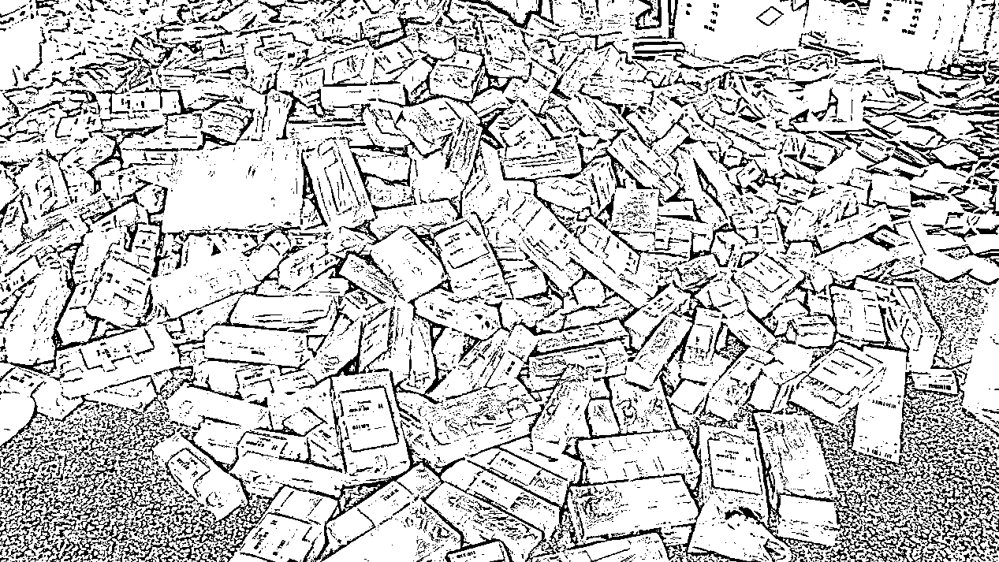
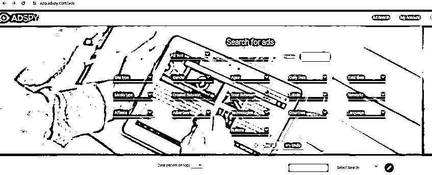
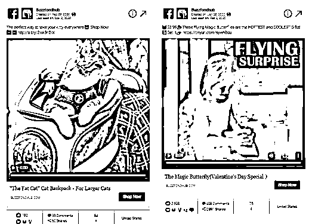
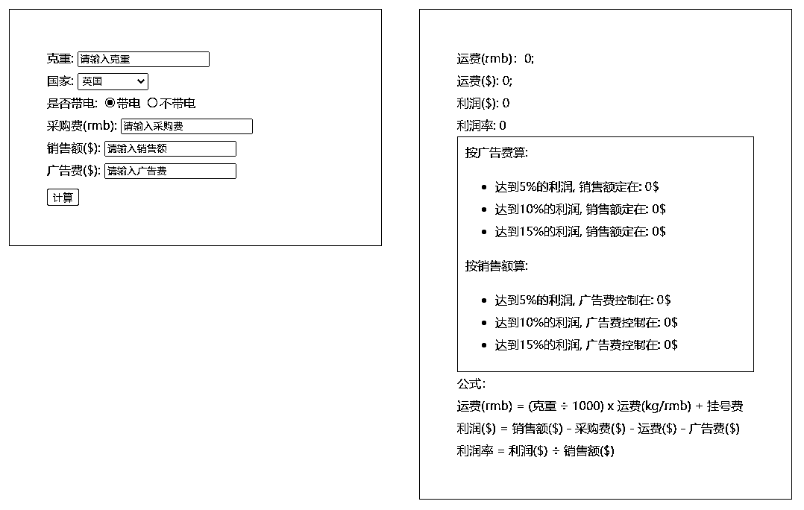
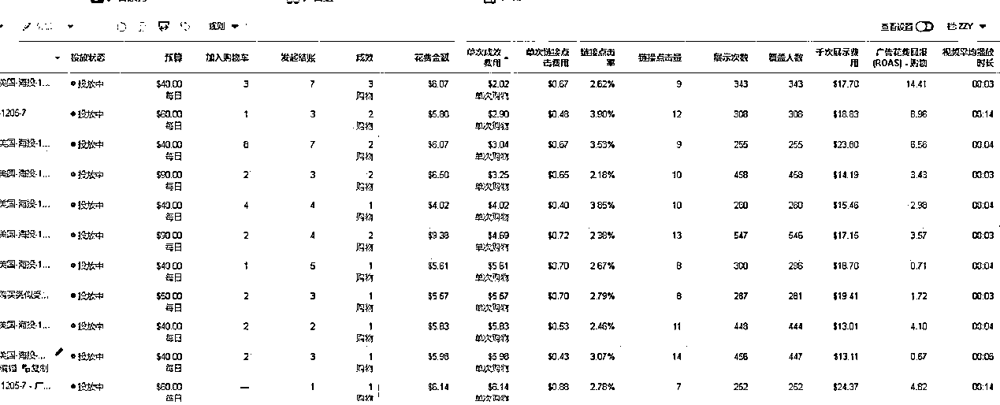
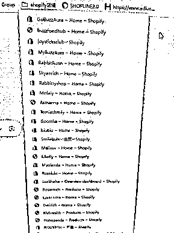
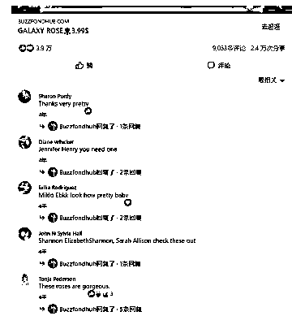
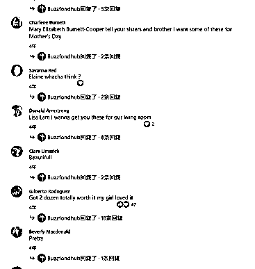
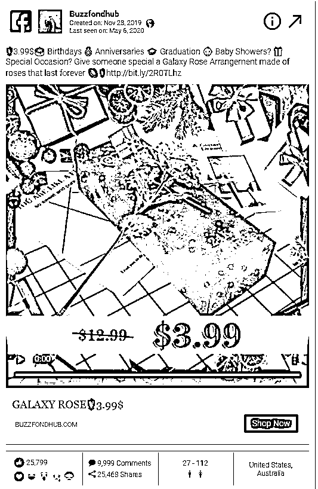
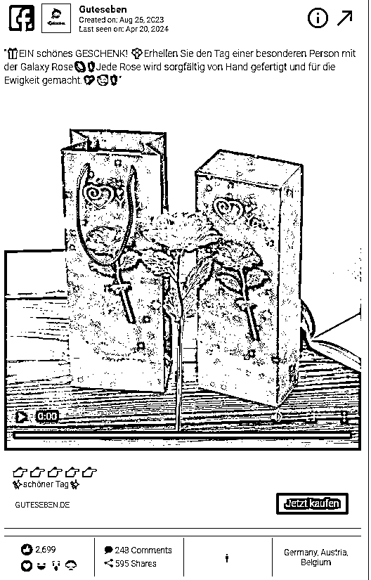

来源：https://pwqw2m6be2x.feishu.cn/docx/Q1lEdFwSAor8jUxVgK8ct0Hynub
97年，2个人，3个月，1000万，独立站爆款实战心得
大家好，我是小迪。
生财二年级学生，第一次发文，欢迎各位圈友来交流。
做独立站有句话，选品不选对，做啥都白费。希望自己的经验能给大家带来一些收获。

一、什么是独立站？（老鸟请自动跳过一）
独立站是卖家脱离诸如亚马逊、eBay、 wish、lazada这些平台自主建站出售自己的产品的方式。简单地讲，就是自己建一个属于自己的电商平台，然后上传商品到平台销售，不过这一切需要卖家自己全盘负责营销推广。
1、独立站成本构成
做独立站的卖家，成本相对于平台卖家而言会小一些，不过这也不是绝对的。总体而言，独立站利润会比平台的高，主要的成本构成在以下几方面：
①建站费用:大体水平在 3000元/年上下浮动，不过对网站要求非常高，特别是需要各种定制的卖家，服务费用也会高很多。
②引流成本:除了免费引流的部分，卖家还需要准备部分资金用于测试投放Facebook、谷歌、YouTube、kol网红等渠道。
③备货仓储:需要有一些储备，因为独立站回款快，但是对卖家备货要求不高。
④物流成本:独立站物流与平台电商物流差异不明显，主要看卖的货物来选择物流方式，再核算物流成本。
2、独立站运营
不论是平台还是独立站，电商的运营逻辑都大体一致，即产品-流量-转化。那么要怎么做好独立站的运营呢？大家可以参考以下几点:
①选品
独立站的选品及定价，可以参考亚马逊运营的思路，即30-50美元的轻质小体积商品。如果成本能把控，那么利润会比做亚马逊要高很多。
②建站
建站需要确定域名，购买域名后选择建站平台:完成商城搭建。目前成熟的建站平台非常多，Shopify、Shopline、 Ueeshop等等 都是卖家常用的品牌。
③流量
平台卖家引流主要是在平台内部做seo优化和ppc广告投放，比如亚马逊卖家就需要围绕亚马逊内部来进行引流。但独立站卖家的引流方式相对开放很多，需要用各大社媒、搜索引擎去引导用户到自己的站点浏览点击下单。
在营运推广阶段，由于每个卖家情况不同，需要从自己的实际情况出发，选择最适合自己的。
二、0-1做到产品头部的过程拆解
1、市场调研
①历年同行投放的爆品：我当时是使用Adspy（广告间谍工具）这个网站工具来搜索产品，我把近5年情人节圣诞节前几个月的产品，搜刮出来后，做了一份选品表，把同行的投放日期，投放视频图片素材，帖子的互动率，投放的国家，广告文案，全部记录了下来，并且每天跟进同行最新投放的帖子，如果有持续投放的，说明同行在拉预算，同时我会去看评论区，最新评论，是不是最近几个小时，是否都有人在评论，从这里可以说明帖子是否处于一直活跃在投放中的。


②同行投手帖子数量：从Facebook广告资料库里，查询同行主页投放的帖子数量，帖子数量越多，说明广告组或者广告素材测的越多，说明同行投起来的数据，很重视这个产品，如果每天都更新更多的帖子数量，也说明可能在同行拉大投放预算。（此处有个坑，这2年，有一些跨境工厂滞销了一些库存定制产品，正头疼清不掉这些产品，当发现Facebook的官方资料库会自动统计同行广告帖子数量，知道大家都会根据帖子数量来跟卖，于是他把自己的滞销品， 外包给老外做一些拍摄和混剪视频，让运营开了200条广告，投放出去，200条广告，看似好像需要花很多钱，实际上他可能每条广告，只开0.1美金的预算，但是却在官方资料库里，帖子数量呈现了200条，造成了一个爆品的假象，导致很多同行突然发现帖子数量，纷纷跟卖，导致很多人投不起来浪费了很多测品的费用，这种就是假爆品）
经过筛选，再从国内1688找到所有产品的货源，做好利润表分析，得出广告需要控制多少的单次购物成本，才能盈亏平衡。
2、制定广告投放预算计划

3、素材
①YOUTUBE开箱素材
去YOUTUBE找博主测评过的素材或者开箱视频，做开头的混剪，可能有些人会问，国外版权肖像权保护，使用博主的素材很容易被判定侵权素材，封广告，但其实我们当时有做剪辑处理，只展示博主开箱的部分，视频里不露脸，然后音频换掉，做一些转场和卡点BGM。
我们甚至还找了很多亚马逊上的买家秀视频，确实很多拍的不错的视频，我们混剪了一些片段加进去，视频播放时长15秒左右。
②视频剪辑思路
-首先了解自己要做的视频内容是什么。
-确定好产品的定位，脑袋里有一个大概的设计样式、思路后，开始去网络上寻找相关的素材。
-根据给到的产品落地页的关键词到YOUTUBE、INS等平台上去搜寻产品相关素材，如果搜索不到相应的素材，可以多换几个关键词来寻找。
-制作视频之前尽可能地确认剪辑视频所需要用的的音乐、音乐风格以节省剪辑时间。
-因为大多数视频是网络上下载的，素材有限，制作视频剪辑也尽可能发挥搜集到的视频素材亮点，让素材有趣的、吸引用户的部分凸显出来。
-视频的前几秒尤为关键，需要在前几秒就抓住人的眼球，吸引观众接着往下看，所以在剪辑视频时要把视频的亮点、吸引人的画面放在第3、4、5秒最为合适。
-在比较有趣的视频素材里也可以插入一些音效增添氛围，吸引用户起到互动/共鸣的感觉。
-要仔细检查视频里有没有存在有侵权风险的logo、画面或音乐等等，一经发现及时作出修改。
-同一个产品可以尝试多种风格剪辑，每种风格都会达到不同的效果，对比投放数据之后可以了解什么样的风格适合什么样的产品，给自己做一个总结。
4、广告测试投放
①单个产品创建2个广告系列，分别是ins和fb②产品测试投放期间，选择最有把握的受众性别和年龄，跑起来的产品再扩散受众。
③单个广告组预算10美金一组 ，首次上架测试限2个广告组。④广告组排期投放，过00：00点，00:05开始投放，这样早上就可以看到广告数据，合理控制预算。
⑤版位加入测试范围:产品测试期间，FB和INS的版位全部勾选

5、广告测试期优化&判断
广告覆盖达到300人，检查分析广告效果①没有出单的情况：
-单次链接点击费用大于1美金（主要） -链接点击率小于1.5%
满足以上任一条件，关闭广告，分析问题，优化后创建新广告组再次试投，重复尝试2-3次。广告组数据达标，但是没有出单的情况下，最大测试费用不能超过预算广告费。
预算广告费=（采购成本+运费+30）* 0.4
②有出单的情况，以广告组为单位进行衡量 -单次链接点击费用小于1美金（主要）
-链接点击率大于1.5%满足上述条件的前提下：
-单次成效第一天最大允许预算广告费的200%，如果超出，关闭广告重新创建。-广告组第5天单次成效降低到150%（数据以广告投放期间为准）。
-广告组第10天降低到100%（数据以广告投放期间为准）。预算广告费=（采购成本+运费+30）* 0.4
产品售价= （采购成本+运费+预算广告费+30）* 1.05
6、已验证产品优化满足条件：连续3天盈利的广告组
①广告初始状态-广告组预算10美金
②受众细分-以测试广告组数据为依据进行受众基本属性细分，基本属性包含：性别、年龄、版位、广告媒介（FB、INS，两者数据皆可需分两个系列进行投放）
-受众的兴趣与测试广告组保持一致-细分受众的广告组人群在100万以上，例子：假定该兴趣下30岁男性这个年龄的受众只有30万，则需要把多个年龄划分到一个广告组以保证该组受众在100万以上。
③预算调整-广告组成效达到10、20、30
-广告组单次成效在产品广告预算范围内-预算增加到20、30、50美金（对应3.1.1），注意是“增加到”。
④其它-年龄边界（指最小年龄和最大年龄）调整：以广告组成效为依据，边界年龄成效在产品广告预算范围内则进行年龄扩展（每次向外扩展2岁）；边界年龄成效在产品广告预算范围外的则进行年龄收缩，根据成效数据判断对广告进行关闭，前提是已经过至少3轮广告组重投。
-由于FB广告存在一定的偶然性，初期广告走势会直接影响该广告组后续成效，所以在单次成效超过预算广告费，原广告组关停，重新创建（复制）广告组，基于【5、广告测试期优化&判断】进行判断。
7、广告维护每天查看评论，能回复的尽量回复，否则隐藏。
三、案列分享
拼夕夕1rmb进货价的塑料玫瑰，经过滤镜拍摄、精美包装，日出1W单--爆款”Galaxy rose“ 特效银河玫瑰横空出世。
在19年，矩阵20多个玫瑰花网站的布局里，我卖的好的店铺，在广告资料库或者Adspy工具里都可以搜出历史的广告记录，广告互动率，并都有客户真实的评价互动留言，主页进去还能看到帖子评论，但现在很多店铺都打不开了，因为这个产品就和玫瑰一样，红于一时。



和国内不同，老外在独立站上购物需要支付运费，这是一件比较合理的事情，有的时候还会支付小费。不像我们国内看到2块钱的运费，都会换一家去购买。
当时算了一笔账：1rmb，卖19.99刀，利润在140元左右，1朵加上盒子的运费大概30块钱，广告能抗到15美金，如果每单卖2朵以上， 广告能抗到30美金，那如果卖19朵玫瑰一单，利润就是……接近500块钱？于是一个营销策略浮上心头。
成本既然才1块钱，我为什么不捆绑数量销售呢？
于是，我找到了厂家定制礼盒，3朵的盒子，9朵的盒子，18朵的，99朵的大礼盒。
精美玫瑰盒子我当时的售价是9.9$美金, 因为会增加物流体积抛重，增加成本。
于是我结合了国外不同地区的花语含义，找到了大量的文章，在产品详情页描述里加入了各种数量的花语含义，在海外花语博客社群发布内容，并且开始我的Facebook广告投放。
由于我在广告缩略图上添加一些小技巧——加了 ”3.99$“的醒目字眼，而后点击进来的客户转化率还是比较理想的，很多客户就是看到价格便宜，便带着购物意向就进来网站了

反观其他同行的缩略图，都是很精美的，但是点进去以后价格普遍都是19.99刀，最便宜也要8.99刀，他们可能是通过视频效果一朵朵的售卖。

这套流量的打法，不仅需要用视频滤镜来包装产品，提高产品形象，还需要搭配礼盒以及玫瑰小熊等产品去使之看起来更富有价值。而流量来源，不仅是靠Facebook投广告，还需要配合社媒营销，帖子转发发布等。
我当时在海外红人合作网站上，找了网红帮忙写关于情人节礼物的含义和花语，顺便帮我们转发到她们的INS上，一共只花了200刀,却得到了5篇高质量文章，所以当时就有很多粉丝靠着博主的帖子进来我的网站直接下单，使用博主的折扣码下单，每朵花还可以减1刀，完成订单后我再返给博主0.5刀, 以此类推，当时引进了大概有2万朵单左右，博主也成功拿到了1万多刀的返金。
初次献声，暂告段落，如果各位喜欢，我会再多一些输出~